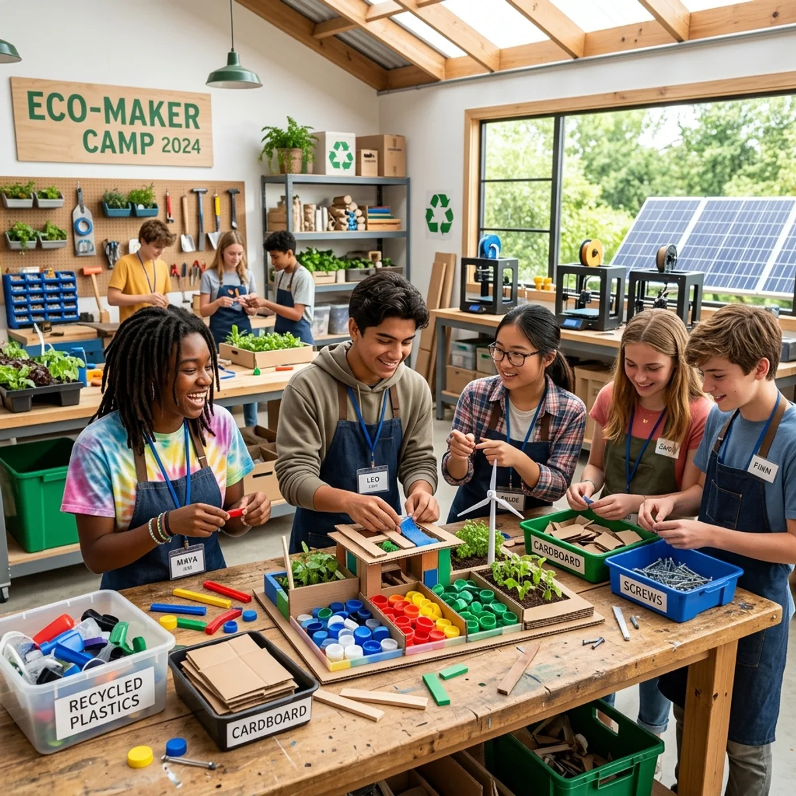

ЛІТО ТВОГО ВПЛИВУ
Екоінтенсив для підлітків 14–18 років
«Розумію, дію, впливаю» - тижні дії, мейкерства та реальних змін у твоєму місті. Обирай свій виклик або проходь усі три!

дружня атмосфера та команда однодумців
перші кроки до затребуваної професії та корисне літо
ТВОЯ ІСТОРІЯ ЦЬОГО ЛІТА
Ми впевнені: ти можеш більше, ніж думаєш. Наша програма - це простір, де ти перестаєш бути глядачем і стаєш творцем. Реальний мейкерспейс, підтримка менторів, які вірять у твій потенціал, та команда однодумців, готових змінювати цей світ разом із тобою в Академії U:maker.
Для кого цей інтенсив?
Для екоактивістів
Якщо ти хочеш нарешті вийти за рамки теорії та створити реальний стартап, який працює.
Для майбутніх підприємців та винахідників
Навіть якщо екологія для тебе нова сфера - тут ти навчишся створювати бізнес-моделі, тестувати ідеї та конструювати круті речі.
Для креативників та медіамейкерів
Якщо ти хочеш комунікувати зі світом, запускати вірусні кампанії та прокачати навички блогера чи піарника.
ЩО, ЯКБИ ТИ МІГ/МОГЛА ЗМІНИТИ ЩОСЬ У СВОЄМУ МІСТІ?
Саме цим ми займемося цього літа. Це час для тих, хто хоче не просто мріяти, а діяти.
ЩО НА ТЕБЕ ЧЕКАЄ
Створення власних проєктів
Перетворюй ідеї на стартапи, артоб'єкти, медіа та корисні ініціативи.
Примірка крутих професій
Спробуй себе як підприємець, дизайнер, урбаніст, винахідник чи журналіст.
Реальний вплив
Досліджуй свої сильні сторони, долучайся до волонтерських та екоініціатив.
Спільно з ГО «Кроківня»
Опануємо інструменти міської мобільності та просторового розвитку. Жодної нудної теорії - лише реальні зміни в місті.
КОМАНДА МЕНТОРІВ

Семен
Верхоглядов

Антон
Волович

Тетяна
Копайгородська

Андрій
Григірчик

Ірина
Бобрик

Вікторія
Норенко

Марина
Батуринець
3 ТИЖНІ - 3 ВИКЛИКИ
Trash-to-Cash
Створи власний екостартап та запусти його роботу. Сортування - це гроші. З'ясуй, скільки «сміття» треба зібрати, щоб екологічним шляхом заробити на PS5, нові пуфи чи круту піца-паті для друзів.
Покроковий трек
- День 1: Генерація та ШІ - світові тренди, робота з ChatGPT/Midjourney, формування команд.
- День 2: Бізнес-моделювання - Lean Canvas, цінність за Остервальдером, юніт-економіка.
- День 3: Мейкерство та прототип - MVP, брендінг, сайт на Webflow/Tilda.
- День 4: Маркетинг - стратегія просування, віральний контент, живі продажі.
- День 5: Великий пітчинг перед запрошеними експертами та інвесторами.
URBAN ECO-HACK
Спроєткуй «розумну точку» сортування. Спробуй себе у промисловому дизайні та перетвори звичайні баки на футуристичний арт-об'єкт з інтерактивними елементами чи підсвіткою, біля якого захочеться робити селфі.
Покроковий трек
- День 1: Урбан-аналітика - дослідження міських потоків, визначення проблемних зон сортування.
- День 2: Промисловий дизайн - ескізи, 3D-моделювання, ергономіка та доступність.
- День 3: Конструювання - збірка прототипу зі справжніх матеріалів у мейкерспейсі.
- День 4: Інтерактив та арт - підсвітка, QR-коди, гейміфікація сортування.
- День 5: Публічна презентація та тестування прототипу на реальних людях.
ZERO WASTE LAB
Створи власний лімітований мерч із переробленого пластику на професійному обладнанні. Під час майстер-класу з апсайклінгу ти придумаєш і розробиш моделі унікальних речей: брелоки, значки, елементи для шкільних меблів чи фіджет-антистреси.
Покроковий трек
- День 1: Матеріалознавство - види пластику, технології переробки, безпека роботи.
- День 2: Дизайн мерчу - від скетчу до 3D-моделі, вибір форми та функціоналу.
- День 3: Апсайклінг-майстерня - робота на професійному обладнанні, перші зразки.
- День 4: Брендинг - пакування, лімітована серія, стратегія продажу еко-мерчу.
- День 5: Ярмарок мерчу та підсумковий пітчинг перед журі.
ТАКОЖ У ПРОГРАМІ
Сміттєва логістика та гроші
Як влаштований ринок вторсировини в Україні? Куди везти та як пакувати сировину, щоб отримати максимум.
Архітектура потоків
Як спроєктувати простір так, щоб люди на підсвідомому рівні сортували сміття правильно - секрети психології простору.
Сафарі на сортувальну станцію
Екскурсія на реальний об'єкт («Україна без сміття» або локальні хаби), щоб побачити масштаб індустрії зсередини.
Prototyping Day
Складання, конструювання та тестування перших моделей екобаків прямо на місці.
Eco-Influence Lab
Мало просто створити круті баки - треба надихнути людей ними користуватися. Команда розробляє віральну інформ-кампанію: TikTok-челенджі, дотепні меми про культуру сортування та внутрішню систему «екокоїнів» для учнів.
Hard Skills, які ти прокачаєш
Цифрові інструменти
No-code платформи (Tilda/Webflow) та генеративний ШІ (ChatGPT, Midjourney).
Економічна грамотність
Собівартість, маржинальність, CAC, B2B-сегмент та екологія.
Школа пітчингу
Презентуй ідею за 3 хвилини так, щоб у неї захотілося інвестувати.
ЩО ТИ ЗАБЕРЕШ ІЗ СОБОЮ
Розумію себе
Краще розуміння своїх інтересів, цінностей та сильних сторін.
Вмію
Досвід командної роботи, створення бізнес-плану, прототипування та презентації власної ідеї.
Дію
Досвід волонтерства та участі в реальних ініціативах.
Впливаю
Реалізований командний проєкт та досвід позитивного впливу на спільноту.
Поширені запитання
Харчування та побут
Де саме обідають підлітки?
Учасники мають спільний обід у нашому Спільнокафе. Усі страви готуються на власній кухні - їжа завжди свіжа, гаряча та по-домашньому смачна.
Що входить у полуденок та перекуси?
Свіжі сезонні фрукти, печиво, корисні снеки, чай та очищена вода - щоб підтримувати рівень енергії під час активної роботи.
Чи є вегетаріанське або безлактозне меню?
Так, ми адаптуємо меню під потреби дитини. Вкажіть особливості дієти у формі реєстрації або попередьте менеджера під час підтвердження заявки.
Безпека та команда
Де розташоване укриття?
На локації (ЖК Варшавський, вул. Родини Крістерів, 20-Г) є власне сертифіковане сховище зі світлом, інтернетом та місцями для роботи. У разі тривоги група разом із менторами оперативно спускається туди.
Скільки менторів з групою?
З кожною групою постійно перебувають двоє досвідчених менторів - на заняттях, виїздах, обіді та в укритті.
Чи є аптечка та медик?
Так, простір укомплектований сертифікованими аптечками, вся команда пройшла відповідний інструктаж.
Навчання та формат
Чи всі заняття на базі Академії?
Основна частина - у просторі на вул. Родини Крістерів, 20-Г. Програма також включає виїзди: екосафарі на сортувальні станції та урбаністичні локації міста.
Чи потрібен власний ноутбук?
Ноутбук обов'язковий - для бізнес-моделей, аналізу ринку, роботи з ШІ та сайтів на Webflow/Tilda. Також знадобиться смартфон із камерою. Немає можливості - попередьте менеджера, забронюємо техніку Академії.
Як підлітки підсумовують день?
О 17:30 - обов'язкова сесія рефлексії та фідбеку. Вчимося аналізувати помилки й здобутки, екологічно висловлювати думку, фіксувати прокачані навички.
Оплата
Що, якщо дитина захворіла?
Гроші не повертаються, але оплата зберігається - можна перенести на інший доступний тиждень табору або на інший освітній продукт Академії.
Чи можливе розтермінування?
Так. Можна внести фіксовану передоплату для бронювання місця (та збереження знижки), а решту - перед початком інтенсиву. Узгодьте з менеджером.
ШЛЯХ УЧАСНИКА
Обери свій виклик (або всі три) та подай заявку
Познайомся з командою та знайди однодумців
Пройди шлях від ідеї до реалізації за 5 днів
Забери готовий кейс і мерч у власне портфоліо
УМОВИ УЧАСТІ
У вартість входить:
- 5 днів занять (10:00–18:00) у сучасному просторі на вул. Родини Крістерів, 20-Г
- Повноцінні обіди та корисні перекуси протягом дня
- Усі необхідні матеріали й заготовки для мейкерства та мерчу
- Доступ до професійного софту та технічної бази Академії
Система знижок:
- До 10 червня: −10%
- До 25 червня: −5%
- Учням та випускникам U:maker: −15%